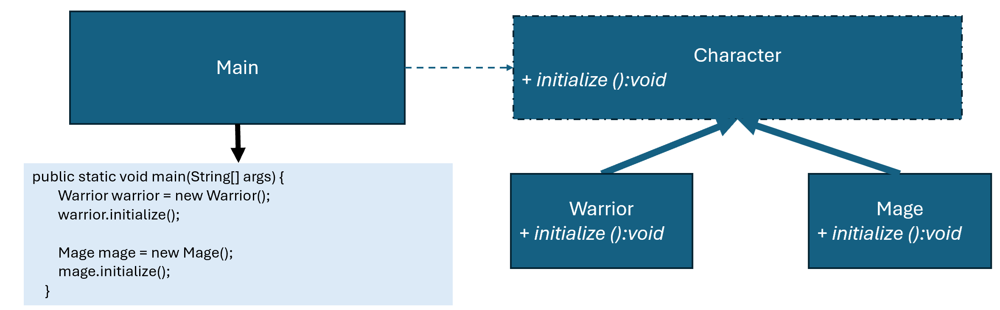

優點
缺點
總評
本次互動只有學生單獨描述程式設計，雖有結構化反思與邏輯說明，但完全未和 AI 展開對話推進、驗證、比較或審查，互動層次屬於最低的答案導向型。
enum CareerType {
MAGE, WARRIOR;
}
interface Role {
void setAttributes();
void equipWeapon();
}
class WarriorRole implements Role {
public void setAttributes() {
System.out.println("設置戰士的高攻擊與防禦");
}
public void equipWeapon() {
System.out.println("裝備劍");
}
}
class MageRole implements Role {
public void setAttributes() {
System.out.println("設置法師的高魔力");
}
public void equipWeapon() {
System.out.println("裝備魔杖");
}
}
abstract class Character {
Role role;
public final void initialize() {
role = genCharacter(); // 產生角色物件
role.setAttributes(); // 設定角色屬性
role.equipWeapon(); // 配置角色武器
}
abstract Role genCharacter();
}
class Warrior extends Character {
@Override
Role genCharacter() {
return new WarriorRole();
}
}
class Mage extends Character {
@Override
Role genCharacter() {
return new MageRole();
}
}
class CharacterFactory {
public Character getCareer(String p) {
if (p == null) {
throw new IllegalArgumentException("Career can not be a null type !");
}
try {
CareerType careerType = CareerType.valueOf(p.toUpperCase());
return switch (careerType) {
case MAGE -> new Mage();
case WARRIOR -> new Warrior();
};
} catch (Exception e) {
throw new IllegalArgumentException("This career is unacceptable !");
}
}
}
public class Main {
public static void main(String[] args) {
CharacterFactory characterFactory = new CharacterFactory();
Character character = characterFactory.getCareer("Warrior");
character.initialize();
character = characterFactory.getCareer("MAGE");
character.initialize();
}
}
!@#$報告
新設計有何優點?
這份程式我寫的時候主要是想解決一個問題：遊戲裡不同職業的角色初始化流程很像，但屬性跟武器不同，如果每個職業都硬寫一堆重複程式，維護會很麻煩。
所以我先把角色分成兩層：一層是 Character 抽象類別，裡面定義了初始化流程 initialize()，包括產生角色、設定屬性、裝備武器。另一層是 Role 接口，具體每個職業的屬性跟武器由它實作。像 WarriorRole 設定高攻高防並裝劍，MageRole 設定高魔力並裝魔杖。
Character 只負責流程控制，不管是戰士還是法師都用同一個 initialize()，只要呼叫 genCharacter() 就會得到對應的角色物件。這就是典型的模板方法模式：流程固定，細節由子類別或介面決定。
再加一個 CharacterFactory 工廠，主程式只要丟一個字串 "Warrior" 或 "Mage"，就會拿到對應角色物件。這樣做的好處是，如果之後要加新職業，只要新增一個 Role 實作和對應 Character 子類別，原本程式幾乎不用改，維護和擴充都很方便。
實際執行時，程式會先產生戰士物件，設定屬性並裝劍，接著產生法師物件，設定魔力並裝魔杖。整體設計讓初始化流程統一、角色細節可彈性擴充，而且主程式保持簡潔易讀。
!@#$
設計一個角色工廠，能夠生成不同類型的遊戲角色 (Warrior 和 Mage)，並用 Template Method 模式來定義initialize()初始化步驟（包括設定屬性、裝備武器等）。
請檢視程式碼介面是否違反 Factory Method 模式，並撰寫報告，討論新設計有何優點?

public class Main {
public static void main(String[] args) {
Character character = new Warrior();
character.initialize();
character = new Mage();
character.initialize();
}
}
abstract class Character {
Role role ;
final void initialize() {
role = genCharacter(); //產生角色物件
role.setAttributes(); //設定角色屬性
role.equipWeapon(); //配置角色武器
}
abstract Role genCharacter() ;
}
abstract class Role {
abstract void setAttributes();
abstract void equipWeapon();
}
class Warrior extends Character {
.....
}
class Mage extends Character {
.....
}
class WarriorRole extends Role {
void setAttributes(){
System.out.println("設置戰士的高攻擊與防禦");
}
void equipWeapon(){
System.out.println("裝備劍");
}
}
class MageRole extends Role {
void setAttributes(){
System.out.println("設置法師的高魔力");
}
void equipWeapon(){
System.out.println("裝備魔杖");
}
}
並修改其他程式，使得執行輸出：